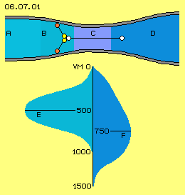
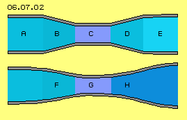
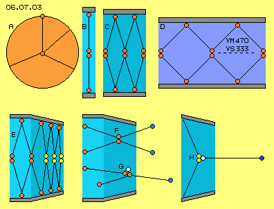

Manipulation of Density and Speed
At previous chapters was discussed the mechanic motion of a ´wall´. Resulting are changes of the density of fluid-particles and the direction plus speed of molecular movements. However this occurs also by pure ´passive´ measurements, e.g. simply by the shape of walls. This was already demonstrated upside by the Potential-Twist and Segment-Pipes. Well known and often used are the effects coming up within nozzles. A special shape is used at the ´Laval-Nozzle´ - with ´phenomenal´ acceleration effect.
The general shape of that nozzle schematic is shown at picture 06.07.01 by a longitudinal cross-sectional view. The cross-section face A of a pipe (grey) becomes reduced to a nozzle C and afterward the face again increases to a wider diameter D. At area A, in front of the nozzle, exists subsonic flow, within the nozzle area C exists a flow by sound-speed and - rather astonishing - the flow within the wider outlet area D moves by ultrasound-speed. This effect is used e.g. for cutting iron by water-jets.

This phenomenal appearance generally is explained anyhow by likely ´phenomenal theoretic calculation tricks´ - nevertheless it seems not reasonable where from the energy for an acceleration should come. The real essential effect results of collisions of the particles at area B. There exists a higher density, the particles collide more frequent and the chance for multiple-collisions increases.
Here for example are drawn two particles (red) Flying from the wall towards the centre. Both particles meet there (yellow) and same time they hit at a third particle (white). Onto that third now double kinetic energy is transferred, so this particle leaves the nozzle C super-fast into the outlet area D. Both energy-delivering particles remain at this area rather slow.
Shifting Speeds
Not all particles of a fluid are moving by likely speed. Assumed is the ´Gauß-normal-spreading´ like here roughly sketched by bell-shape E below left at this picture. The minimum / maximum of the speeds of air-particles might be 0 to 1000 m/s, resulting an average speed of about 500 m/s. Normally that spreading is rather constant, as normally the speeds and directions are exchanged one-by-one at the collisions. A decisive change only comes up, if the exchange occurs between multiple partners - respective only by these multiple-collisions can result these different speeds.
Not all particles of a fluid are moving by likely speed. Assumed is the ´Gauß-normal-spreading´ like here roughly sketched by bell-shape E below left at this picture. The minimum / maximum of the speeds of air-particles might be 0 to 1000 m/s, resulting an average speed of about 500 m/s. Normally that spreading is rather constant, as normally the speeds and directions are exchanged one-by-one at the collisions. A decisive change only comes up, if the exchange occurs between multiple partners - respective only by these multiple-collisions can result these different speeds. Within these nozzles exist good conditions for multiple-collisions and above this, all involved particles move into a preferred direction (see vectors at B), so these ultra-sound resp. even ´ultra-molecular´ fast motions prevailingly occur in general direction of that flow.
The ´phenomenal´ result is a shifted spreading of molecular speeds, like schematic sketched at F (below right at this picture): strange enough there are more particles with relative low speed ´hanging around´ within the area of the nozzle. At the other hand, there are much more particles with essentially increased speed, flying ´super-fast´ off into the outlet area. The throughput is unchanged, however the spreading of the actual kinetic energy of involved particles is changed. So pure passive measurements (according reduction and following enlargement of cross-sectional faces) are sufficient for manipulating the molecular speeds - up to the fact, soft water can cut solid steal.
Common Nozzle and Laval-Nozzles
Picture 06.07.02 shows two pipes (grey) by longitudinal cross-sectional view, upside with ´normal´ decreasing and increasing cross-sectional face, below with the special shape of a Laval-nozzle. At A the fluid flows by given speed from left to right, at B the pipe becomes more narrow and by known physical laws the flow becomes accelerated. Afterward, the fluid flows through the pipe C some faster (than at starting point A), however that acceleration did not demand corresponding external energy input.
Opposite, if the fluid is flowing off a thin pipe into a wider cross-sectional face D, the flow pressure decreases and the static pressure increases. Strange enough, however not correspondingly. So strange enough, there comes up a well known ´resistance´ and the fluid at E now flows some slower. So the decreasing cross-sections of a pipe is neutral respective positive, while an increasing diameter of a pipe is negative (concerning the fluid throughput and flow-pressure). That´s a well known fact of fluid-sciences. Unknown however is the source for the increased kinetic energy within the bottleneck (and also for the energy ´loss´ within the wider pipe).

About 120 years ago, P. de Laval (and independent also E. Körting) found an experienced construction without that loss of throughput, but with strongly accelerated output. That ´Laval-Nozzle´ schematic is sketched at this picture below. The pipe diameter decreases until a bottleneck and afterward the diameter again increases to a cross-section face wider than before of the nozzle. The walls must be smoothly curved and should not open by more than ten degree.
About 120 years ago, P. de Laval (and independent also E. Körting) found an experienced construction without that loss of throughput, but with strongly accelerated output. That ´Laval-Nozzle´ schematic is sketched at this picture below. The pipe diameter decreases until a bottleneck and afterward the diameter again increases to a cross-section face wider than before of the nozzle. The walls must be smoothly curved and should not open by more than ten degree. At the convergent inlet area F the flow moves slower than sound speed, at the bottleneck G the flow moves by sound-speed, within the divergent area H the flow might be ultrasound fast.
Model of molecular Movements
Picture 06.07.03 schematic shows the movement process of fluid particles within previous pipe. Starting point is the ´action-radius´ A of a molecule, which moves from its actual position to any place at this circle within one time-unit, pushed there by a collision with average molecular speed. Within gases, these collisions and motions into any direction occur continuously.
At B are drawn two molecules (red points) within a pipe (grey). Representative for any motion, here they are moving only up and down. These particles thus wander from the centre to the wall (there drawn once more) and back. This movement-pattern represents ´resting´ fluid.

At C this molecular movement is overlaid by a motion ahead, i.e. these particles wander within the pipe some forward (towards right) at zigzag-tracks. Naturally these particles still move into any direction, however in general just that distance forward, step by step. The molecular speed is unchanged, i.e. also the distances each time-unit are unchanged. Already that simple model obviously shows, faster flows demand a smaller diameter (if the density and temperature etc. are unchanged). In addition, these particles hit less often towards the pipe-wall and by inclined angle, so these particles affect less static pressure aside towards the wall.
At D is shown the typical movement-pattern of sound-speed. The fluid moves forward within the space by e.g. 333 m/s (VS 333, dotted line), however the molecules fly at these zigzag-ways by molecular speed of 470 m/s (VM 470). Naturally the particles demand even smaller cross-sections and affect even less pressure aside. Correspondingly stronger pressure of that flow exists towards the front side.
Cross-Stroker and Free-Flyer
At E is drawn a pipe (grey) becoming more narrow and the movement-pattern within representing a flow like at previous C. At the diagonal pipe wall, the molecules are rejected and return to the centre more steep, every time more and more steep. The particles still move by likely speed, i.e. the collisions now occur more frequent by shorter intervals. So the fluid there is more dense and the static pressure increases (opposite to common formula). The particles marked yellow here are called ´cross-strokers´.
However there must exist also an other movement pattern, resulting the real experiences of a nozzle. For example, at F is shown the situation of particles, which actually move (nearby) into longitudinal direction within the pipe. If these particles collide, the flow is not delayed. These particles fall off the nozzle into following free space by a speed, nearby as fast as molecular movements, practically without resistance and without affecting pressure aside towards the pipe wall. These particles are really ´valuable´ concerning the throughput, because they leave gaps at their original places and they never will return. So these particles marked blue here are called ´free-flyers´, thus an opposite pattern of previous cross-strokers.
Stationars and Racers
The particles of gases fly by certain speed only as an average, e.g. by previous 470 m/s of air. The speeds however differ and the spreading of speeds is assumed bell-like, by Gauß-spreading. So if tow particles of similar directions meet (like at G), often will occur ´rear-end-collisions´, i.e. a faster particle transmits its speed onto a previously slower particle some ahead. The original fast particle now remains (nearby) stationary within the space respective it´s pushed back or aside only a little bit. This movement pattern here is called ´stationar´ because these particles ´hang around´ relativ calm within the nozzle area.
At following collisions, they do not show much resistance, i.e. they seem ´light´. These particles are even ´valuable´ concerning the throughput, because at the following collision they might take even high speed with no resistance. So next step they might become most fast ´free-flyers´.
At H now is sketched a combination of previous movement pattern with special importance, especially concerning the Laval-nozzle. Two cross-strokers (yellow) occasionally meet same moment onto a stationar (white) and both transfer their kinetic energy onto that ´light´ particle. Both particles contribute their normal molecular speed and thus they accelerate that ´third´ not only ultra-sound-fast but ´ultra-molecular-fast´ (thus up to maximum of 2*470 = 940 m/s). Both original particles are rejected only a little bit resp. might become ´resting´ stationars. The third particle - here called ´racer´ and marked dark-blue - flies off correspondingly faster.
Naturally these racers won´t fly direct into longitudinal direction of the pipe, so the flow as a whole moves ahead not by double molecular speed. However that movement pattern is the exclusive cause for ultrasound-fast flows of Laval-nozzles. At the outlet of a Laval-nozzle, the diameter of the pipe increases, practically protecting these racers from collisions with neighbours aside. At the other hand, the angle of that opening must be relative small, so within that super-fast flow collisions occur only by similar directions and in shape of previous rear-end-collisions. Above this, an increased volume now is available with corresponding decreased density. The particles have a good chance to fly long distances without resistance, generating that strong and super-fast flow.
Movement Mixture
So the flow at a decreasing diameter of a pipe does not anyhow ´run through the gears´ according to common formula. Already within a normal flow the molecular movement speed differs quit a lot. Within the nozzles however, the motion pattern differ much stronger (while common formula simply work with the average of density, flow- and sound- and molecular-speeds).
The trigger of the acceleration effect is the reduction of the cross-sectional face (smooth and flow-conform), resulting at first an increased density and pressure. The distances between the collisions become shorter and more collisions occur. Irrespective of, some particles fly direct through the bottleneck, also bundles of particles into similar directions, relative near to each other and nearby parallel, without negative collisions. Thus the molecular speed becomes passed-through at direct tracks towards the outlet. Especially by ´rear-end-collisions´ most fast speed is transferred forward. At the other hand, these collisions result particles remaining nearby resting at the spot, affecting few resistance for following collisions. Just these ´stationars´ decisively are accelerated by ´twin-collisions´.
These multiple-collisions naturally occur also at normal conditions within a resting fluid, resulting that normal-spreading of actual molecular speeds. Here however within the bottleneck of a nozzle, these multiple-collisions occur more frequent. As here the normal molecular movement is overlaid by the general forward-motion of a flow, these collisions prevailingly occur with forward-showing vectors. So that speed-diversification (previous Gauß-spreading) now does not occur into all directions likely, but prevailingly into the flow direction.
Within that mixture of ´stationar, cross-stroker, free-flyer and racer´ thus the actual speed is most different. These four particles could move ahead e.g. by 0, 0, 470 and 940 m/s, an average of 350 m/s, thus by sound-speed through the bottleneck of the nozzle - no matter how fast the flow did run originally. So the acceleration is not based on the starting speed and/or any input of forces. That self-acceleration exclusively is based on the transformation of characteristic movement-pattern. Strange enough, in front of the outlet prevailingly these cross-strokers exist and stationars ´hang around´ nearby resting, while from the outlet into free area these free-flyers with normal or increased molecular speed dominate or even these racers are running up to double molecular speed, thus as a whole by ultrasound-speed.
Naturally, some readers might doubt whether that simple model of movement pattern can really explain that phenomenon. However, that movement pattern of multiple-collision for example, analogue is the exclusive cause for any evaporation, where particles even are kicked off their liquid compound. So that process is most important. As you know, without evaporation of sea-water no clouds would come up, no rain and no water and no living being at land could exist. Likely decisive are these multiple-collisions for changes within any flow - and just also within previous nozzles.
Basics, Aeroplanes, Machines
Many of previous facts are well known. Here however the processes were discussed by a new point of view. Instead of the formal approach of the fluid-sciences, even these ´phenomena´ appearances are explained plausible. Just that final example did show once more, the effect of suction is achieved without energy input. Also the acceleration often is achieved only by fitting design of surfaces.
So enough basic aspects are discussed for the conception of suitable fluid-machines at following chapters. At first however, most interesting aspects concerning aero-technology are discussed at the following part.